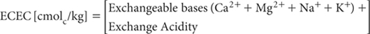

Effective CEC is the sum of the exchangeable bases (Ca2+, Mg2+, Na+, K+; method is optional) plus exchange acidity (Al3+ plus H+; from 1 M KCl – Method 15G1), all expressed as cmolc/kg on an oven-dry basis (e.g. Baker 1984). Other definitions for ECEC are also used (e.g. Coleman and Thomas 1967, Kamprath 1970, Blakemore et al. 1987).
The method is relatively simple to perform and usually provides a reliable guide to the actual CEC of neutral and acidic soils, even when these are dominated by variable-charge colloids; however, positive errors from soluble bases – including those introduced as fertilisers and amendments – can occur, if these are included in the estimate of exchangeable bases selected for use.

Report ECEC (cmolc/kg), expressed on an oven-dry basis, noting the code for the method used for exchangeable bases.
1. All components in this calculation should be expressed in the same units (cmolc/kg) and on the same soil moisture status. It is suggested that the air-dry to oven-dry moisture correction be made in advance. Refer to Method 2A1 for guidance with regard to soil moisture calculations.